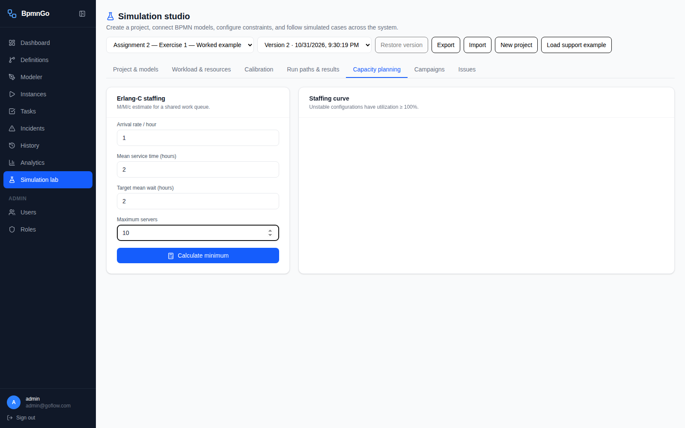
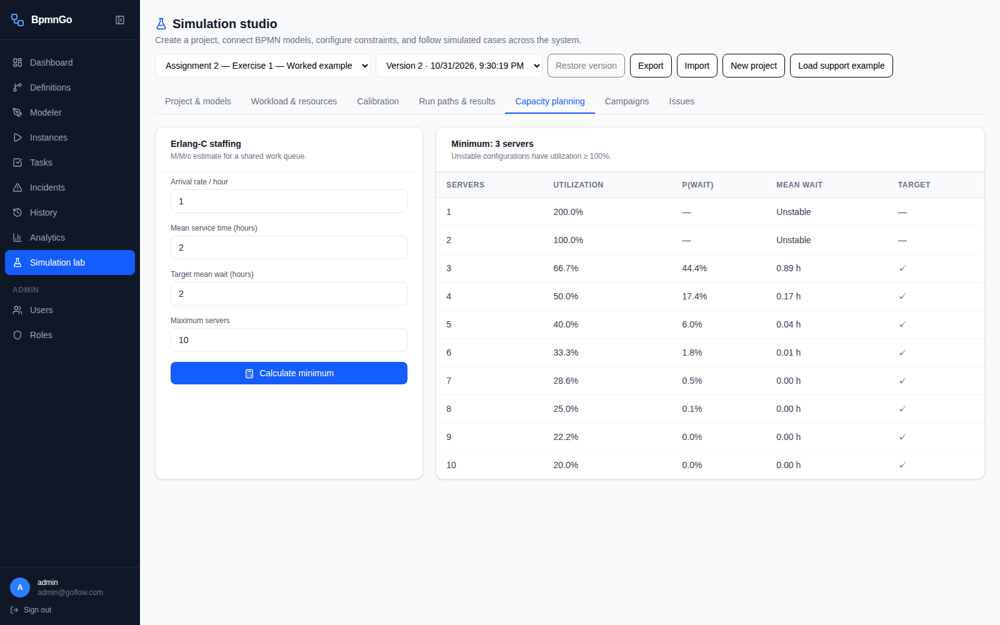
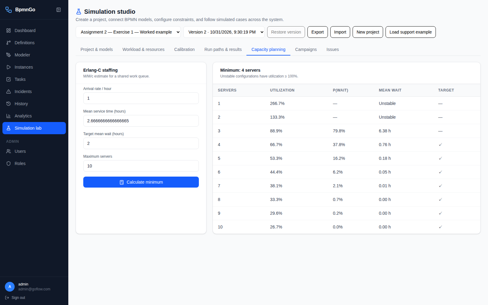

Exercise 2 — How many Level-2 staff?
Three staff, assuming a two-hour resolution service.
With one request per working hour, BpmnGo calculates a mean queueing wait of 53.33 minutes, below the two-working-hour target. This is a queueing-model result under the assumptions stated below.
Open BpmnGo · Exact primary inputs and results · Alternative inputs and results
Watch the completed calculation
The recording includes both service-time assumptions and returns to the primary two-hour result at the end.
1. Open Capacity planning
Open Simulation studio and select Capacity planning. No BPMN changes, new resource pools, or simulation campaign are needed. This calculator has its own arrival and service parameters; it does not derive them from the project's tasks.
2. Enter the queueing assumptions
| Field | Value | Meaning |
|---|
| Arrival rate / hour | 1 | Requests reaching the Level-2 queue per working hour |
| Mean service time (hours) | 2 | Research and resolution time for one request |
| Target mean wait (hours) | 2 | Time waiting before service starts |
| Maximum servers | 10 | Search up to ten employees |
Click Calculate minimum. A “server” here means one Level-2 employee handling one request at a time. Three servers do not mean three people collaborate on each request.

3. Read and check the result
| Staff | Utilization | Mean queueing wait | Wait below 2 hours? |
|---|
| 1 | 200.0% | No finite steady-state mean | No |
| 2 | 100.0% | No finite steady-state mean | No |
| 3 | 66.7% | 0.8889 h (53.33 min) | Yes |
| 4 | 50.0% | 0.1739 h (10.43 min) | Yes |
| 5 | 40.0% | 0.0398 h (2.39 min) | Yes |
Two staff can process at most one request per hour, exactly equal to arrivals. With random arrivals and service durations, this has no stable steady-state queue. Three staff provide spare capacity and meet the waiting target.

4. Explain the calculation
Use an M/M/c (Erlang-C) model: Poisson arrivals, independent exponential service times, identical employees, a shared first-in-first-out queue, and no abandonment. Working time is modeled continuously; no overnight or weekend closure is added.
Arrival rate λ = 1 request/hour. Service rate per employee μ = 1/2 = 0.5 requests/hour. Offered load λ/μ = 2 employee-equivalents. Stability requires c > 2.
At c = 3: utilization ρ = λ/(cμ) = 2/3. Erlang-C gives probability of waiting P(wait) = 4/9. Mean queueing wait Wq = P(wait)/(cμ − λ) = (4/9)/(1.5 − 1) = 8/9 hours = 53.33 minutes < 2 hours.
The mean total time in this queueing station is service plus waiting: 2 + 0.8889 = 2.8889 hours. The assignment's target concerns waiting, not this total.
Suggested explanation: Assuming that the Level-2 queue serves the two-hour research/resolution activity, with Poisson arrivals at one request per working hour and exponentially distributed service durations, three staff are required. Two staff are at 100% utilization and do not yield a stable queue. With three staff, utilization is 66.7% and the Erlang-C mean waiting time is approximately 0.889 working hours, below the required two hours.
5. Check the service-time interpretation
The statement also assigns work to evaluation (20 minutes) and writing (20 minutes). If those are included in one service visit, change Mean service time (hours) to 2.6666666667 and calculate again. This alternative excludes repeated attempts.
| Modeled service | Service duration | Minimum staff | Mean wait at that staffing |
|---|
| Research/resolution only | 2 h | 3 | 53.33 min |
| Evaluation + research/resolution + writing, one visit | 2 h 40 min | 4 | 45.41 min |
For the second interpretation, three employees give about 6.38 hours of waiting, so four are required. Neither calculation silently adds the 20% rework loop. If the one-request/hour rate means new requests only and rework must also be included, the queueing model must be extended. State the scope of service and arrivals in your answer; the supplied means alone do not determine a unique waiting-time distribution.

Reopen and reproduce
Capacity-planning inputs and results currently live in browser-session state and are not stored as a project revision or campaign. The video, screenshots and JSON files here preserve the completed calculation. To reproduce it in BpmnGo, open Capacity planning, enter 1, 2, 2, 10, and click Calculate minimum.
Exercise 1's saved project was used only to navigate into the studio. Its process configuration was not edited.